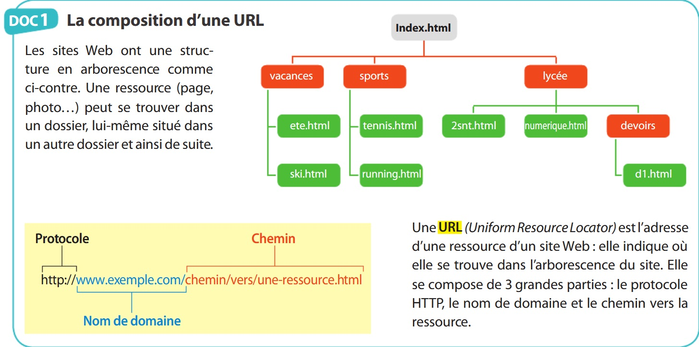

URL signifie Uniform Resource Locator soit en français, « localisateur uniforme de ressource ».
Chaque page web possède une adresse unique qui permet de l'identifier :

Une URL se décompose en trois grandes parties :
Travail demandé :
Complétez le document réponse paragraphe l'URL suivant : document réponse
Sur le document réponse répondez à l'exercice suivant :
A partir de l’exemple donné, déterminez pour chaque URL ci-dessous le protocole, le serveur, le dossier et finalement la ressource demandée. Précisez également si les ressources sont accessibles de manière sécurisée ou non
1) http://eduscol.education.fr/pid25852/actualites-dunumerique.html
2) http://portquiz.net:1337/
3) https://fr.wikipedia.org/wiki/%C3%89diteur_de_texte
4) https://www.fun-mooc.fr/courses/course-v1%3Ainria%2B41018%2Bsession01/about
5) https://fr.wikipedia.org/wiki/Linux#Histoire
6) https://www.google.fr
7) ftp://ftp.fr.debian.org/debian/README
8) file:///C:/Users/Public/Desktop/document.odt
Créé avec HelpNDoc Personal Edition: Environnement de création d'aide complet